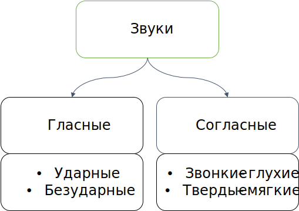

Гласные буквы(10): а, о, и, е, ё, э, ы, у, ю, я
Гласные звуки(6): [а], [о], [и], [э], [у], [ы]
Согласные звуки, образующиеся при участии голоса, называются звонкими: [б], [в], [г], [д], [ж], [з], [л], [м], [н], [р].
Согласные звуки, образующиеся без участия голоса, называются глухими: [к], [п], [с], [т], [ф], [х], [ц], [ч], [ш], [щ].
Большинство согласных образуют пары по глухости / звонкости.
[б] — [п]
[б’] — [п’]
[в] — [ф]
[в’] — [ф’]
[г] — [к]
[г’] — [к’]
[д] — [т]
[д’] — [т’]
[з] — [с]
[з’] — [с’]
[ж] — [ш]
Звуки [л], [м], [н], [р] всегда звонкие, они не имеют соответствующих глухих звуков.
Звуки [х], [ц], [ч] всегда глухие.
Буквы е, ё, ю, я обозначают сразу два звука, если стоят в начале слова, либо после разделительных Ъ и Ь, либо после гласного звука: [й’э], [й’о], [й’у], [й’а].
Оглушение — замена звонкого согласного звука парным ему глухим в слабой позиции.
Звонкие согласные оглушаются в двух позициях:
1.На конце слова:
Хлеб — [хл’э́п].
(Много) цветов — [цв’ито́ф].
2.Перед глухим согласным:
Когти — [ко́кт’и].
Ложка — [ло́шка]
Озвончение — замена глухого согласного звука парным ему звонким в слабой позиции.
Глухие согласные озвончаются в позиции перед парными звонкими:
Просьба — [про́з’ба].
Отбой — [адбо́й'].